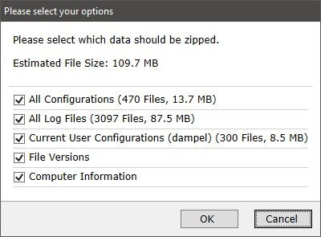

|
如何创建支持ZIP文件
|
您可以创建一个包含所有日志文件和计算机信息的支持ZIP文件，以帮助WITec支持人员查找软件问题。
要创建支持ZIP文件，只需前往WITec项目/Control/TrueMatch的主菜单并选择
帮助 -> 创建支持ZIP文件
（在显微镜计算机上，也可以使用 WITec Service Monitor）
在此您可以选择要压缩的数据。为了获得最佳支持，请将全部数据发送给我们：

现在按下 确定。将创建一个新的ZIP文件。请将此ZIP文件发送给您的WITec支持联系人。